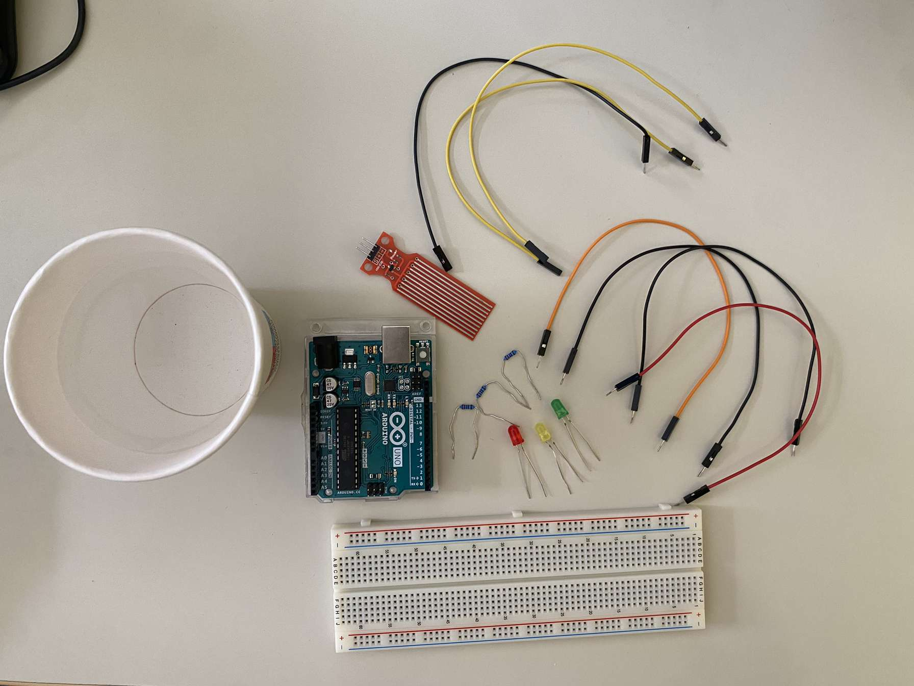
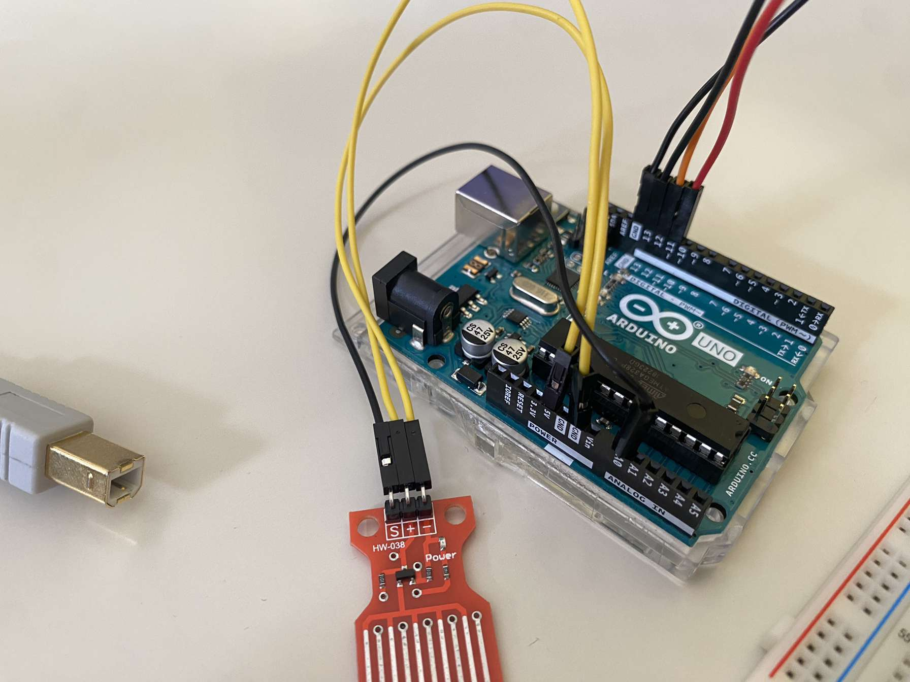
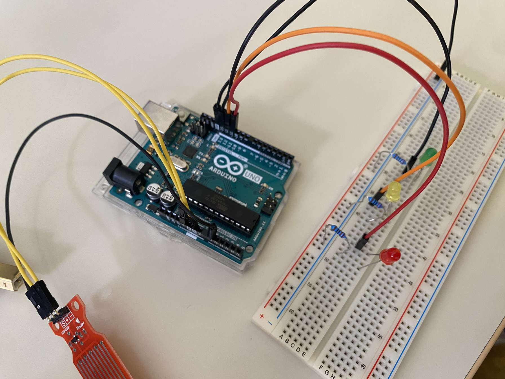
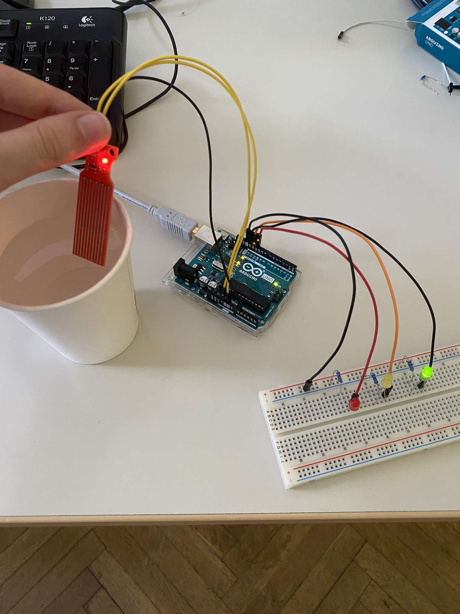
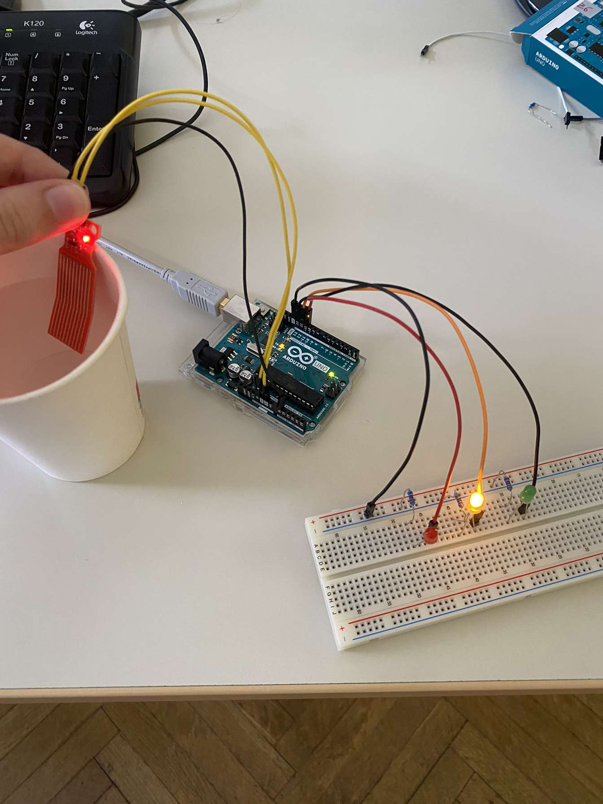
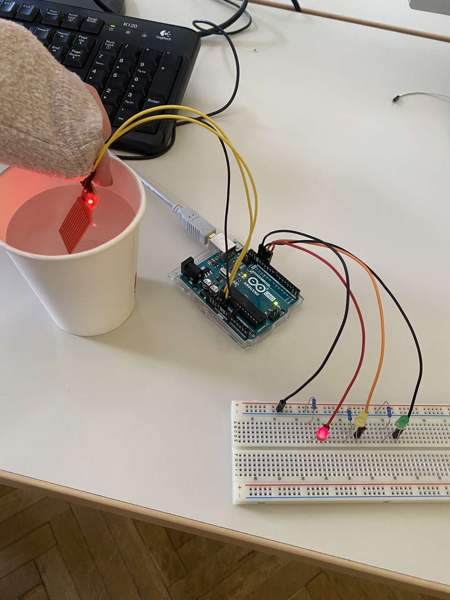
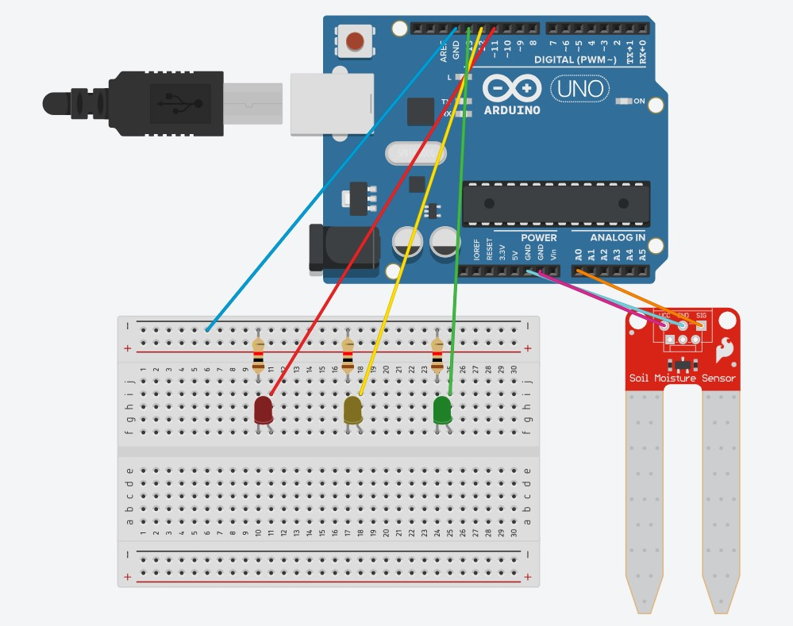

Pri projektu sem sodelovala s sošolcem Matejem, s katerim sva za projekto nalogo dobila vodni senzor Arduino. Projekta sva se lotila tako, da sva prvo pogledala že obstoječe projekte v povezavi s tem senzorjem. Takoj sva našla projekt, ki nama je bil všeč in se ga lotila ustvarjati. Končni namen najinega projekta pa je bil, da, ko je vodni senzor izven vode oz. čisto malo pod vodo sveti zelena LED dioda, ko je vodni senzor globje pod vodo - približno med eno tretjino in polovico senzorja sveti rumena LED dioda in ko je vodni senzor pod vodno gladino že za več kot polovico senzorja zasveti rdeča LED dioda.
| ŠTEVILKA FAZE | POSTOPEK | SLIKA |
|---|---|---|
| 1. faza | V prvi fazi sva si pripravila vse potrebne pripomočke - Arduino uno, prototipska ploščica, vodni senzor, 3 žice ženski-moški, 4 žice moški, 3 LED diode, 3 upore, lonček z vodo in USB kabel (njihov namen si lahko preberete tukaj). | 
|
| 2. faza | V drugi fazi sva skupaj z žicami ženski-moški zvezala vodni senzor in Arduino uno. Moška stran žice se je povezala z Arduino uno, ženska stran pa z vodni senzorjem. | 
|
| 3. faza | V tretji fazi sva v prototipsko ploščico postavila tri Led diode - rdečo, rumeno in zeleno. Na isti vrstici prototipske ploščice, kjer stoji katoda LED diode sva dodala upor, ki je bil povezan z negativno vrstico prototipske plošče. Na vrstico, kjer je anoda LED diode pa sva dodala moške žice, ki so bile povezane z Arduino uno. | 
|
| 4. faza | V četrti fazi sva pripravila lonček z vodo, celotno vezavo opisano zgoraj sva povezala skupaj z USB kablom v računalnik in na Arduino (IDE) napisala kodo (kaj je Arduino (IDE) in kodo si lahko pogledaš tukaj). |
|
| 5. faza | V peti fazi sva pogledala ali nama projekt dela in ga poskusila. V teji fazi je svetila zelena LED dioda, ker je bil vodni senzor še izven dosega vode. | 
|
| 6. faza | V predzadnji fazi sva vodni senzor pomaknila še globje v vodo in takrat je zasvetila rumena LED dioda - ko je senzor med eno tretjino in polovico njegove velikosti pod vodo. | 
|
| 7. faza | V zadnji fazi pa sva vodni senzor pomaknila v vodo za več kot polovico njegove velikosti in takrat je zasvetila rdeča LED dioda. | 
|
Spodaj je tudi skica projekta v Tinkercadu za lažjo predstavo vezja, vendar senzor, ki je na skici, predstavlja senzor za merjenje vlažnosti tal in NE vodni senzor, saj ga v Tinkercadu ni, a je le-ta najbolj podoben njemu. Sicer pa je vezava ista, kot če bi bil v vezju vodni senzor.
Tukaj pa je še video projekta.